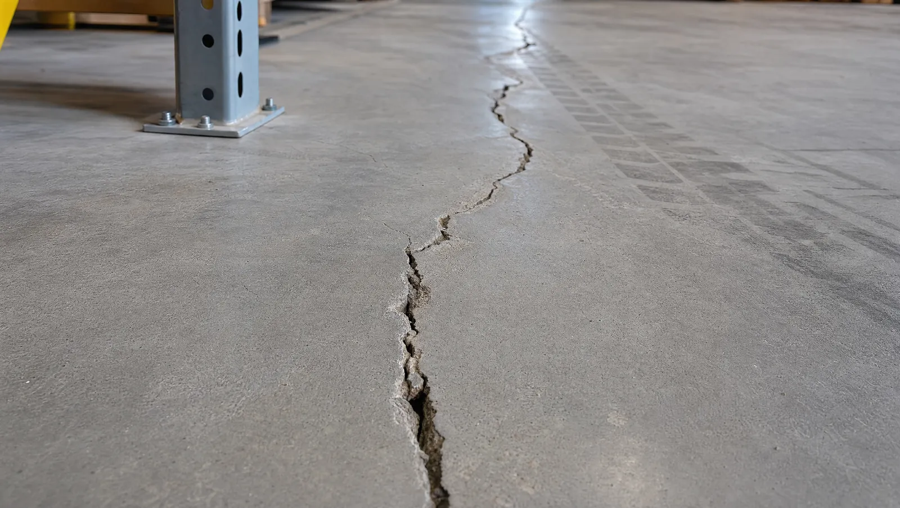
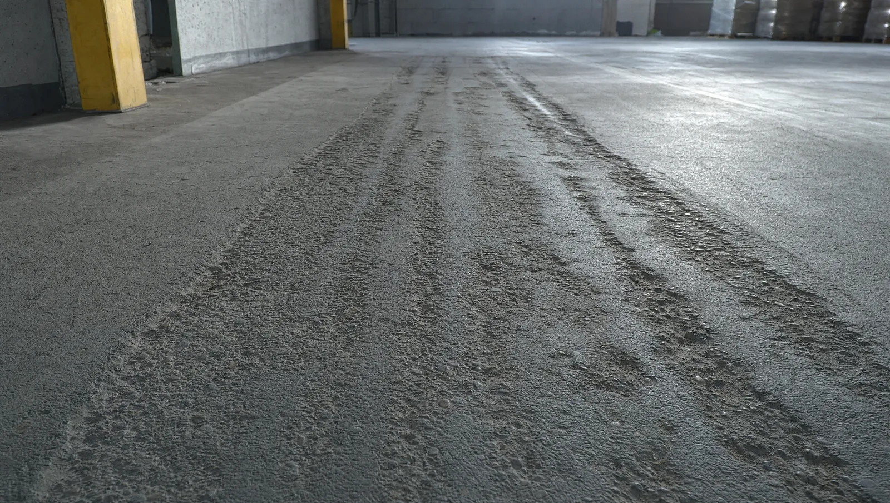
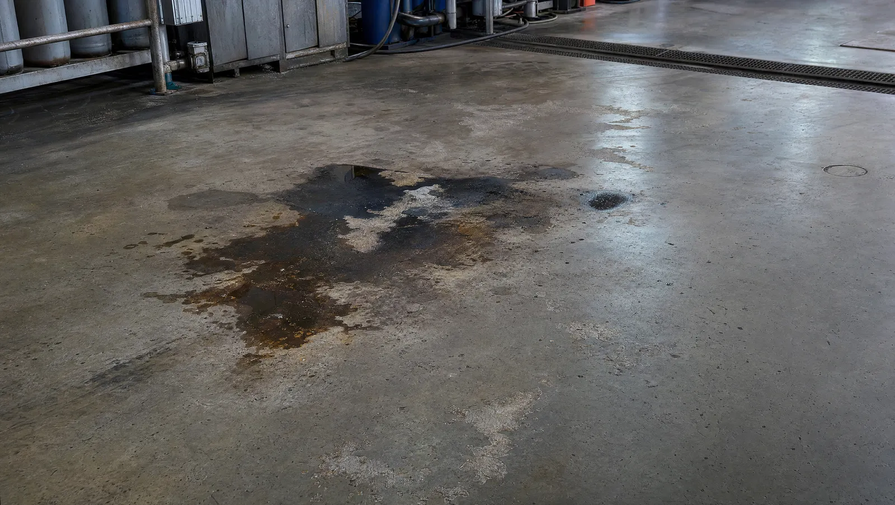
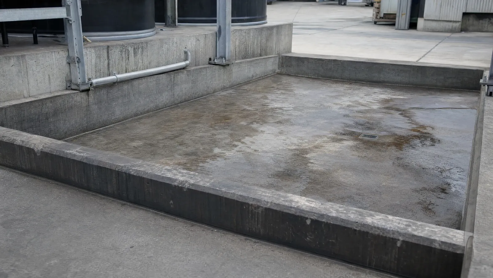
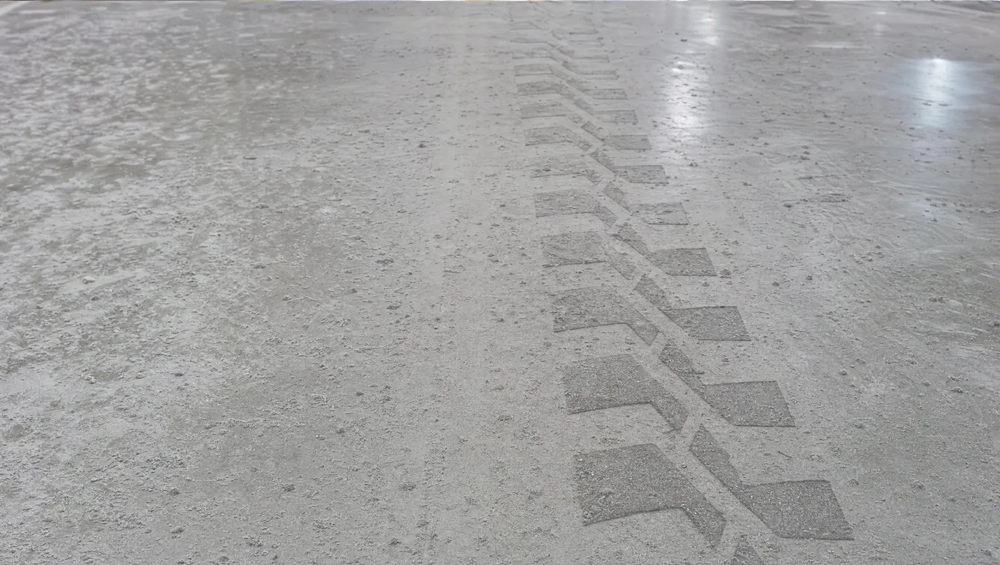

Fachwissen rund um Industrieböden: vom Neubau über die Systemwahl bis zur Sanierung im laufenden Betrieb. Finden Sie den passenden Einstieg nach Aufgabe, Schadensbild oder Branche.
Das richtige System von Anfang an: Auswahl, Sichtboden, Wirtschaftlichkeit.
Welche Bodensysteme für welche Beanspruchung im Neubau infrage kommen und wie Sie die Wahl strukturiert treffen.
Weiterlesen →Gestaltung trifft Funktion: Sichtestrich und Designböden als sichtbare Nutzschicht im Neubau.
Weiterlesen →Lebensdauer, Wartung, Stillstand: weshalb sich die höhere Anfangsinvestition über die Nutzungsdauer auszahlt.
Weiterlesen →Der technische Vergleich der beiden Verfahren — Schichtaufbau, Beanspruchung, Kosten.
Weiterlesen →Bodenschaden einordnen und passend instand setzen. Alle Schadensbilder im Detail unter Schadensbilder →

Erkennen, einordnen, dauerhaft sanieren — von Haarriss bis durchgehendem Riss.
Weiterlesen →
Spurrillen und abgetragene Oberflächen durch Stapler- und Transportverkehr.
Weiterlesen →
Wie aggressive Medien den Beton angreifen und welche Systeme schützen.
Weiterlesen →
Nassbereich, Auffangflächen, Gefahrgut — dichte, beständige Sanierungssysteme.
Weiterlesen →
Wenn der Boden staubt und Substanz verliert — Ursachen und Sanierung.
Weiterlesen →Antworten auf die wichtigsten Betreiberfragen rund um die Sanierung im laufenden Betrieb.
Weiterlesen →Kosten, Stillstand, Beratung: die Grundlagen für die Investitionsentscheidung.
Lebensdauer, Stillstandskosten und CO2 über den gesamten Lebenszyklus betrachtet.
Weiterlesen →Sperrzeit und Wiederinbetriebnahme — wann die sanierte Fläche wieder belastbar ist.
Weiterlesen →Woran Sie erkennen, dass sich der Griff zum Telefon lohnt — und was die Technik dann braucht.
Weiterlesen →Anforderungen und passende Systeme je Sektor. Übersicht unter Lösungen nach Branche →
Industrieböden für Produktionshallen — mechanisch hoch beansprucht.
Weiterlesen →Flächen für Hochregal, Stapler- und Transportverkehr.
Weiterlesen →Hygiene, Reinigung, Nässe und chemische Beständigkeit.
Weiterlesen →Befahrbare, dichte Flächen mit Oberflächenschutz.
Weiterlesen →Belastbar und repräsentativ zugleich.
Weiterlesen →Höchste Punkt- und Flächenlasten, Treibstoffbeständigkeit.
Weiterlesen →Verkehrsflächen schnell und dauerhaft instand setzen.
Weiterlesen →Keine Artikel zu dieser Auswahl.